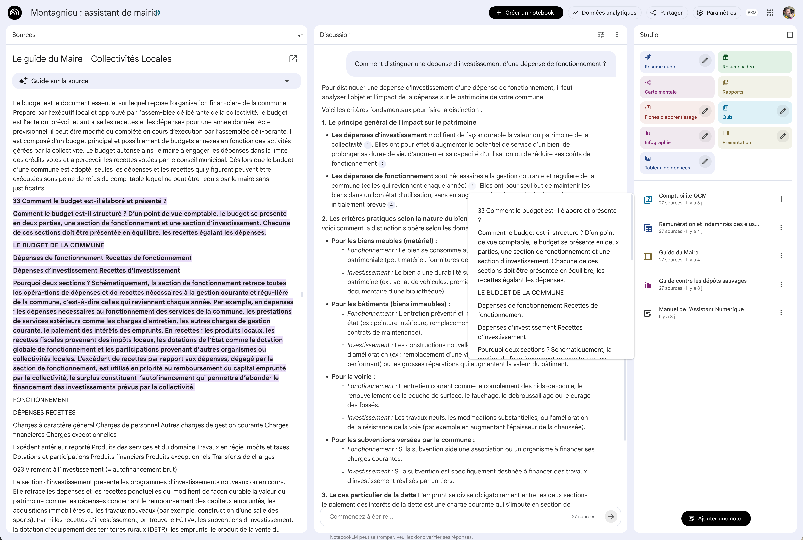

NotebookLM — Vérifier les sources
Quand NotebookLM répond à vos questions, chaque affirmation est liée à vos sources grâce à des références numérotées. Vous pouvez à tout moment vérifier d'où vient l'information, consulter l'extrait original et naviguer dans vos documents. C'est la grande force de NotebookLM : une IA transparente qui vous montre ses preuves.
Cliquez sur les pastilles orange pour découvrir chaque fonctionnalité

Cliquez sur une pastille pour en savoir plus